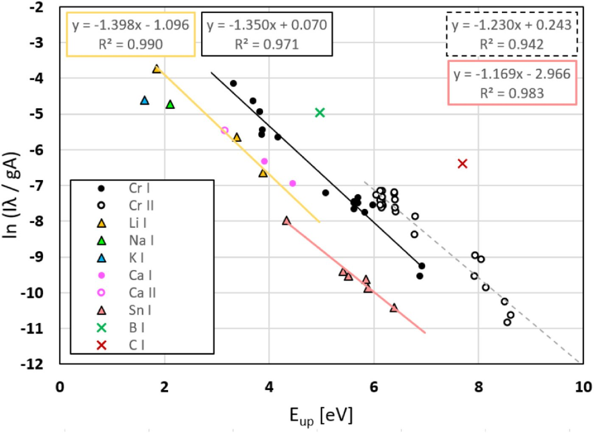
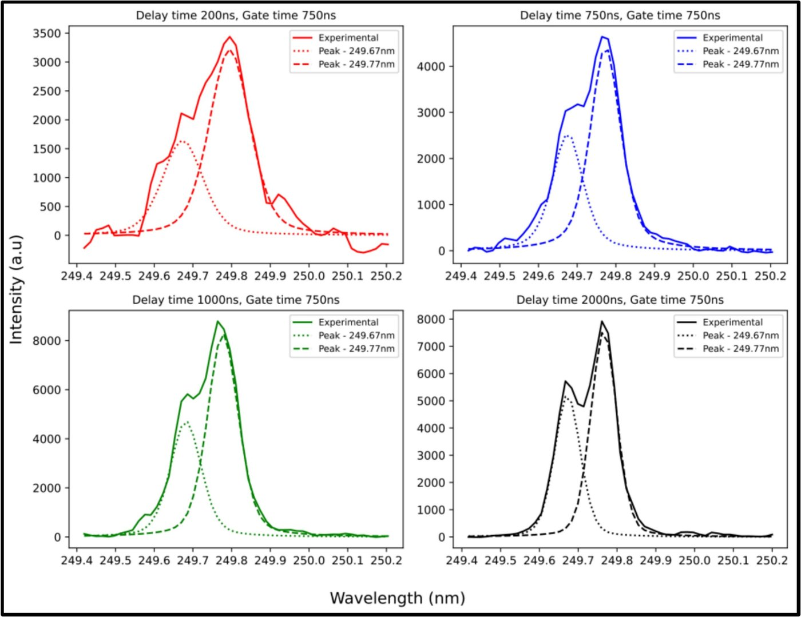
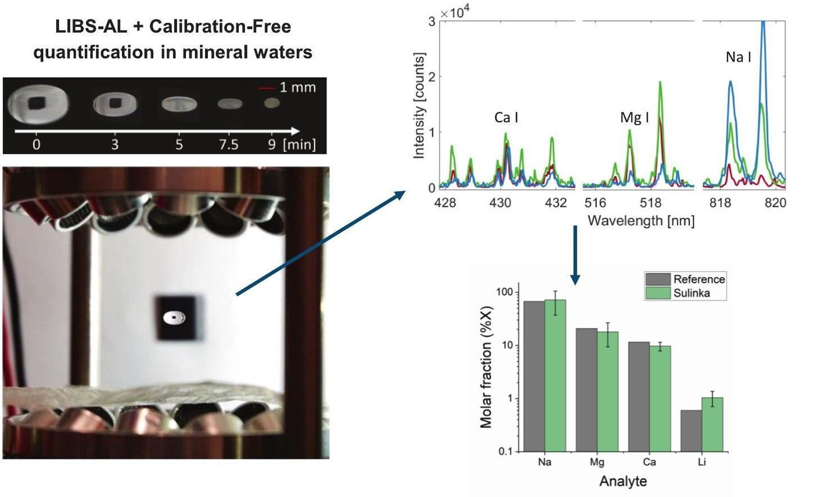

Spectroscopy · PhD research · Comenius University, 2022–2026
Laser-induced breakdown spectroscopy
My PhD research used LIBS for quantitative material analysis: calibration-free LIBS (CF-LIBS) and depth profiling of fusion-relevant materials, and LIBS of liquid droplets held in an acoustic levitator (LIBS-AL). Numbers below are taken from the published papers; "My role" follows each paper's author-contribution statement.
CF-LIBS depth profiling in the COMPASS tokamak
Depth profiles of the layer deposited on Ni–Cr screws at different places in the COMPASS vessel during the liquid-metal (LiSn) divertor testing campaign, quantified without calibration standards.

| Setup | ns Nd:YAG at 532 nm · 100 mbar Ar · echelle spectrometer (Andor M5000) + iCCD (iStar DH743) |
|---|---|
| Plasma diagnostics | Te and ne from Cr I–II, Ni II and Fe I–II lines |
| Li content | 0.3–0.81 at.% |
| Sn content | 0.1–0.23 at.% |
| Li/Sn ratio | 3–3.5 (at.%) |
| Sn detection limit | ≈ 0.1 at.% in a Cr–Ni–Fe matrix |
| My role | Methodology, experiment, writing (review and editing) |
Optically thin condition for trace boron in water
Boron has only one usable doublet in the UV–NIR range (249.7 nm), and it self-absorbs. We used the branching-ratio method to find iCCD delay and gate times where the plasma is optically thin, then built a calibration curve for levitated, laser-dried droplets.

| Setup | Nd:YAG 1064 nm, 7 ns · acoustic levitator · CW-laser pre-concentration · echelle + iCCD |
|---|---|
| Method | Branching ratio of the B I 249.67 / 249.77 nm doublet |
| Limit of detection | 28.7 mg/L (as HBO2) |
| Bottled mineral water | 34.7 mg/L HBO2, 12% error margin |
| My role | Methodology, data curation, visualisation, writing (original draft) |
Calibration-free LIBS of mineral waters
The first calibration-free quantification of levitated liquid samples: three bottled mineral waters from Slovakia and the Czech Republic, analysed without containers, substrates or chemical pretreatment.

| Setup | Nd:YAG at 50 mJ · echelle spectrometer (λ/Δλ = 4000, 230–855 nm) + iCCD · ≈12 µL droplets |
|---|---|
| Elements | Na, K, Li (alkali) · Ca, Mg (alkaline earth) |
| Accuracy, major elements | 3–27% relative error (Na, Ca, Mg) |
| Trace elements | Higher relative error (Li, K) |
| My role | Software, methodology, data curation, writing (review and editing) |
Eroded iron in plasma-activated water
Quantifying Fe debris in plasma-activated water with LIBS-AL, using both conventional calibration curves and a new multi-line calibration based on Boltzmann plots.
| Setup | Nd:YAG 1064 nm, 8 ns, 50 mJ · 1 mm spot on the levitated droplet · echelle + iCCD |
|---|---|
| Calibration | Fe standards at 4, 10, 20, 50, 100 ppm · Fe II 238.23, 263.12, 275.58 nm |
| Limit of detection | 1.8 ppm (R² ≥ 0.989) · 6.8 ppm with the multi-line method |
| Plasma-activated water | 23.7 ± 3.0 ppm (conventional) · 21.7 ± 1.5 ppm (multi-line) |
| My role | Formal analysis and investigation, writing |
Deuterium outgassing caused by ns-LIBS in tungsten coatings
In-situ ns-LIBS and nuclear reaction analysis (NRA) in the Magnum-PSI linear plasma device, on compact and porous tungsten coatings, to check whether the LIBS laser itself disturbs deuterium-retention measurements.
| Setup | Nd:YAG 1064 nm, 8 ns · 0.8 mbar Ar · defocused 2.5 × 2.5 mm spot |
|---|---|
| Deuterium loss in the crater | 66–79% (NRA) |
| Loss explained by ablation alone | 21–42%, so the rest is laser-induced outgassing |
| Compact coatings | Melting and intermixing with the substrate |
| My role | Investigation (Magnum-PSI experiment) |